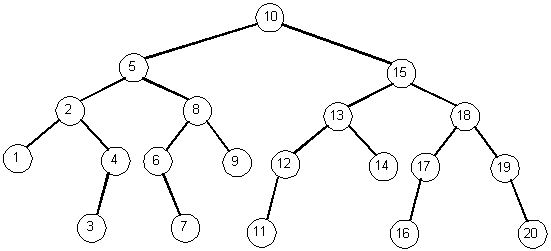
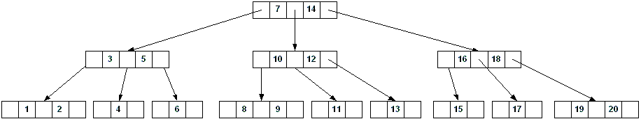
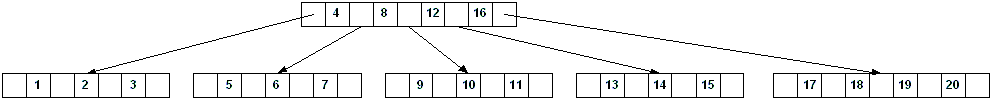
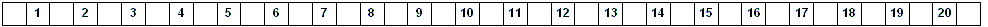
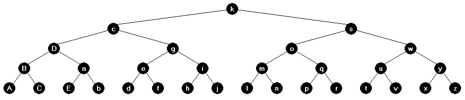
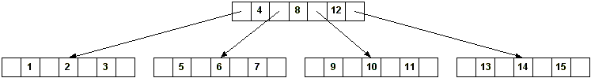
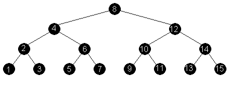
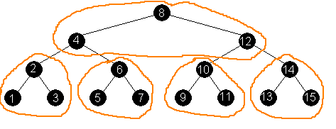

B-Trees
Consider these algorithms for data structures stored on a hard disk:
- Searching an unsorted array with 1,000,000 elements
- Searching a sorted array with 1,000,000 elements
- Inserting into a sorted array.
- Searching a balanced tree with 1,000,000 nodes
- Sorting an array with 1,000,000 elements. (Using a O(n lg n) sort)
Final considerations:
- Programs designed for reading/writing data structures from/to external storage can bypass I/O overhead.
(i.e read sectors instead of files)
- All computations must be done in primary memory. (May further be required to be on the CPU itself.)
That's just the way computers work. Disks are for storage only.
- Must be able to fit some portion of the data into main memory for the algorithm to work.
Suppose we have 20 data elements (keyed from 1 to 20) and we want to store them in a tree so we can minimize the search time (read: minimize the height).
Storing the data in a balanced binary tree: (Height: 4)

Storing the data in a 2-3 tree: (Height: 2)

Storing the data in a 2-3-4-5 tree: (Height: 1)

Storing the data in a tree that can have more than 20 children per node: (Height: 0)

Observations:
- As the number of children per node increases (or keys per node increases), the height decreases.
- This results in faster traversals (depending on traversal speeds), or larger trees with smaller height.
- The maximum number of children per node is called the branching factor (or fanout) of the tree. BSTs have a branching factor of 2. (2-3-4 trees have branching factor of 4)
- Maximizing the branching factor is the key (no pun intended) to the efficiency of B-Trees.
- We've actually just traded one search mechanism for another.
- In a binary tree, we spend a lot of time following left and right child pointers.
- In an n-ary tree (like the trees above), we spend a lot of time finding keys in the nodes.
- This is exactly how the BList worked.
For a balanced binary tree, the height, h was based on the number of nodes/elements: (1 element per node)
h = floor(log2(N))
So, a full and complete balanced binary tree with 31 nodes/elements will have a height of 4:

In a balanced n-ary tree, the height is also based on the number of elements: (more than 1 element per node)
h = floor(logbf(N)) where bf is the branching factor. (Note this is the minimum height)
So, a balanced 2-3-4 tree with 15 elements will have a height of 1. The same tree with 16 elements will
have a height of 2.

| Same data in a balanced binary tree (height is 3): | Showing the "4-nodes", if
this was a red-black tree: |
|---|

|

|
- Named by Bayer and McCreight who studied them in 1972.
- Used primarily for external searching.
- Based on multi-way trees (2-3, 2-3-4, etc.)
- Each node in a B-Tree of order M has between M and M/2 children, except the root.
- All nodes, except the root, are at least half full.
- The BList shows this.
- A BST has a branching factor of 2 (which is also the base of the lg used in complexity computations).
- A B-Tree's height grows logarithmically with the number of nodes it contains. (The base of lg is the branching factor).
Discussion of other Trees
More Details about B-Trees:
- All leaf nodes are at the same level. (Like 2-3-4 trees)
- An internal node with N children has N - 1 keys.
- Typically, an internal node has an array of keys (N - 1) and an array of pointers (N).
- The structure of a leaf node may be different than an internal node.
- The nodes are page-based for optimal performance (determined by the hardware, e.g. hard drive sector/cluster size), which means
the number of keys/children in a node is directly related to the size of a page on disk. (Disk pages are similar
to memory pages used by a memory manager.)
Below is a diagram of a B-tree of height 2 containing over one billion keys. Each internal node and leaf contains 1000 keys.
There are 1001 nodes at depth 1 and over one million nodes at depth 2. There are over 1 billion keys at level 2.
Shown inside each node is the number of keys in the node.

© 2001 Cormen et al.
Suppose the entire tree fit into memory. What can you say about the algorithm used
to find a particular value? What if we had a balanced BST instead? What about the performance?
When storing the data in the node, a node may contain:
- The number of keys in the node
- A sorted array of keys
- A boolean flag indicating if the node is a leaf or not (may be implicit based on depth of the node)
- An array of pointers to children (the keys separate the ranges of the children)
- A variation of the B-Tree is the B+-Tree, which stores the data outside of the node.
This maximizes the branching factor because more pointers (therefore, more children) can be stored in a single node.
Number of Keys and Children
- There is a lower and upper bound on the number of keys a node can contain.
- The minimum number of children a node can contain is the minimum degree of the tree.
- The minimum degree of a tree is denoted as t, and t ≥ 2
- A 2-3-4 tree has minimum degree t = 2. Most B-Trees have a (relatively) large value of t.
- The general formula for the height (maximum) of a balanced tree replaces 2 with the minimum degree, t:
h ≤ floor(logt(N))
This leads to:
floor(logbf(N)) ≤ h ≤ floor(logt(N))
- Reminder: bf is the branching factor, which is the maxiumum number of children.
- A variation of the B-Tree is the B*-Tree, which requires each node to be 2/3 full instead of half full.
struct Data1
{
int Key; // 4 bytes
int Foo; // 4 bytes
int Bar; // 4 bytes
};
struct BTreeNode
{
int NumKeys; // num keys in this node
Data1 Keys[MAX_KEYS]; // key is in a struct
BTreeNode *Children[MAX_CHILDREN]; // "pointers" to children
// MAX_CHILDREN == MAX_KEYS + 1
};
Given a PAGE SIZE of 4096 bytes, this would yield:
- Max keys: 255
- Max children (Max keys + 1, branching factor, order): 256
- Min children (minimum degree, t): 128
- Min keys (Min children - 1): 127
Diagrams
Suppose this was our data: (52 bytes)
struct Data2
{
int Key; // 4 bytes
int Foo; // 4 bytes
int Bar; // 4 bytes
char Name[20]; // 20 bytes
double This; // 8 bytes
double That; // 8 bytes
float Other; // 4 bytes
};
Given the same PAGE SIZE of 4096 bytes, this would yield:
- Max keys: 73 (4088 / 56)
- Max children (Max keys + 1, branching factor, order): 74
- Min children (minimum degree, t): 37
- Min keys (Min children - 1): 36
What about this data:
struct Data3
{
int Key; // 4 bytes
int Data; // 4 bytes
};
Given the same PAGE SIZE of 4096 bytes, this would yield:
- Max keys: 340 (4088 / 12)
- Max children (Max keys + 1, branching factor, order): 341
- Min children (minimum degree, t): 170
- Min keys (Min children - 1): 169
- Operations have to account for disk access.
- Data may not be in memory, so must be retrieved from disk (algorithms only run in memory/CPU).
- Typically, some kind of manager handles the disk access (read a node, write a node).
- Disk access is transparent to the client (via an API).
- Remember, the children pointers in a node are pointers to disk blocks.
- B-Trees facilitate key-range searches. (This is what databases are good at.)
For example:
- Find all data with keys: 100 ≤ key ≤ 200.
- Find all students with a GPA between 3.1 and 3.8.
Inserting a key/data value
- Similar to 2-3-4 trees; insert at the appropriate leaf.
- Need to insert key/data into sorted array. Complexity? (This is CPU complexity)
- If leaf is full, need to split:
- Middle key goes to parent
- Remaining keys get split into 2 nodes
- Like 2-3-4 trees, we can split full nodes on the way down during insert operation.
Advantage of splitting on the way down?
- Splitting the root causes the height to grow by 1.
Deleting a key/data value
- Delete from a leaf, decrement the count (NumKeys)
- Can be complicated if a node ends up having less than the minimum number of keys.
- Need to "adjust" the tree to satisfy B-Tree requirement.
- We can "borrow" from a neighboring node, but what if neighbor can't spare any?
(Works like deletion in a 2-3-4 tree, merge nodes)
- Can allow nodes to become "underfull". In practice, this is generally acceptable.
- May "fix" the tree offline.
- Another scheme may just mark the data as deleted (lazy delete) instead of using costly merges.
- Eventually a new tree will be constructed (offline) when the performance decreases due
to many marked items.
- We saw this scheme with open-addressed hash tables. The marked slots were removed the
next time we grew the table.
- All data is stored outside of the nodes.
- Branching factor is maximized
- Used quite often in practice
- Allows for multiple representations (sortings) on the same data. Each B+ tree has the
same pointers to the actual data.
- This is a huge win and keeps the data normalized.
- This could be done with binary search trees or other node-base containers.
The size of DATA below is 1344. With 4096 byte pages, we would only get 3 structs per page.
struct DATA
{
int ID; // the key
char Name[32];
struct
{
double x;
double y;
double z;
} Position;
double NFA[128];
int DFA[64];
};
A good candidate for a B+ tree implementation.
NTFS,
JFS,
XFS,
ReiserFS, and
Btrfs
are implemented using B+Trees. Also, Microsoft's SQL Server and Oracle's
database systems support B+Trees.